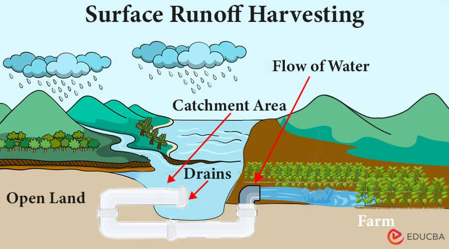

Surface Water Harvesting:

Surface rainwater harvesting refers to the process of collecting and storing rainwater from surfaces such as rooftops, pavements, or other impermeable areas. This method captures the rainwater runoff, which would otherwise be lost, and stores it for future use. The collected water can be used for various purposes, including irrigation, drinking, and industrial applications, thereby reducing dependence on groundwater or municipal water supply. It helps in preventing soil erosion, reducing the risk of flooding, and replenishing the local water table. The rainwater is typically filtered to remove debris and contaminants before storage. In urban areas, surface rainwater harvesting can be an effective solution to water scarcity, as it optimizes the use of available natural resources. It also plays a key role in sustainable water management and is gaining popularity as an eco-friendly alternative to traditional water sources. Proper infrastructure and maintenance are essential for the effectiveness of this system.
Surface water harvesting is the practice of collecting and storing water from natural surface sources such as rivers, lakes, ponds, and streams. This method involves capturing rainwater runoff or diverting water from these sources into storage systems like reservoirs, tanks, or artificial ponds. It is commonly used in regions with limited groundwater resources or areas that experience seasonal water shortages. Surface water harvesting helps provide a reliable water supply for agricultural, domestic, or industrial needs. The stored water can be used during dry periods, reducing the reliance on groundwater and mitigating the impacts of drought. Effective design and maintenance are crucial to prevent water loss through evaporation or contamination. This practice can also support flood control and enhance local ecosystems by maintaining water levels. Surface water harvesting contributes to sustainable water management and helps balance the demands of growing populations. With proper infrastructure, it offers a cost-effective solution for water scarcity challenges.
Here's a more detailed explanation:
What it is:
Surface water harvesting is the process of collecting and storing water from natural surface sources like rivers, lakes, and rain. It helps to secure water supplies, especially in areas with limited or seasonal rainfall. The water can be stored in reservoirs, ponds, or tanks for later use in agriculture, industry, or domestic needs. Methods include constructing dams, weirs, and reservoirs to capture runoff or divert water. This practice helps reduce reliance on over-exploited groundwater sources and mitigates the impacts of droughts. It also contributes to flood control and can improve local ecosystems by maintaining water levels. However, challenges include water quality concerns and the costs of infrastructure.

How it works:
Collection: Rainwater runoff is collected from various sources, including small creeks, streams, and other areas where water flows.
Storage: The collected water is then stored in reservoirs, either on the surface or underground, for later use.
Utilization: The stored water can be used for various purposes, such as irrigation for crops, providing water for livestock, and supporting domestic needs.
Filtration: To ensure the water is safe for use, it is often filtered before being stored. Filters remove impurities like leaves, dust, and small particles from the water.
Distribution: Once stored, the harvested rainwater can be used for various purposes such as irrigation, flushing toilets, or even as potable water if treated adequately.
Benefits:
Water Security: Surface water harvesting helps ensure a reliable water supply, especially in areas with limited or unreliable rainfall.
Reduced Water Scarcity: By capturing and storing rainwater, this method can help alleviate water scarcity and drought conditions.
Sustainable Water Management: Surface water harvesting promotes sustainable water management practices by utilizing a renewable resource.
Cost Savings: By using harvested rainwater for non-potable purposes like irrigation and cleaning, households and businesses can lower their water bills.
Improves Local Ecosystems: Properly managed surface water harvesting systems can help maintain water levels in local rivers, lakes, and wetlands, supporting biodiversity.
Examples:
An example of surface water harvesting is the construction of a rainwater harvesting system in an agricultural area, where water is collected from nearby rivers or streams. A check dam or small reservoir is built to capture excess water during the rainy season. This stored water is then used to irrigate crops during dry spells, ensuring a consistent water supply. In areas with limited groundwater, this method reduces reliance on wells and helps conserve underground resources. Additionally, the harvested water can be used for other purposes, such as livestock or domestic needs. The system improves water security, especially in regions prone to droughts.